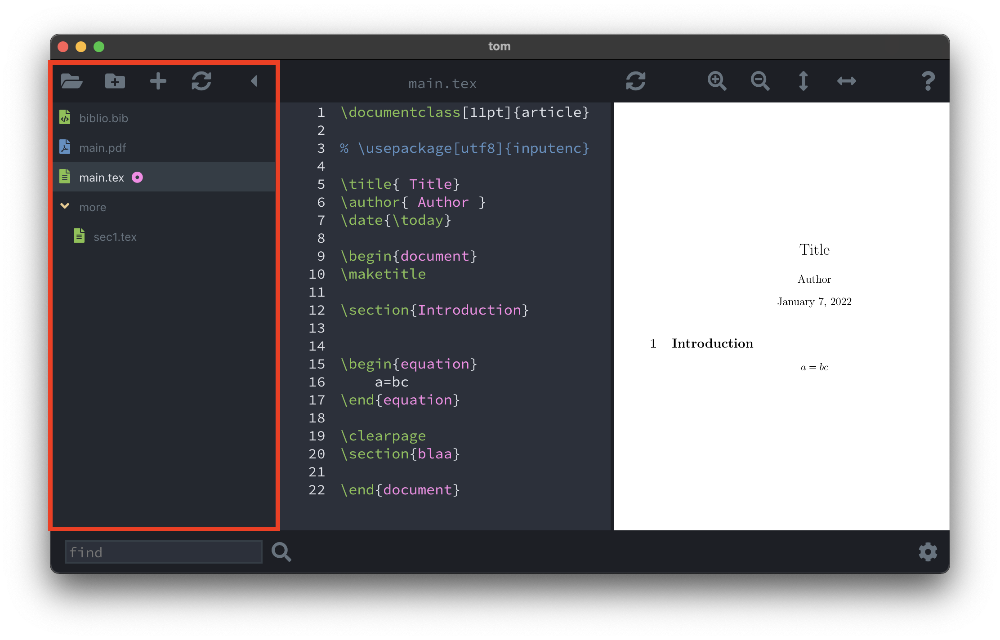
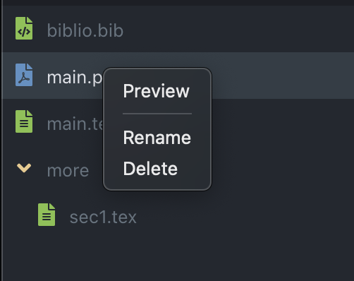
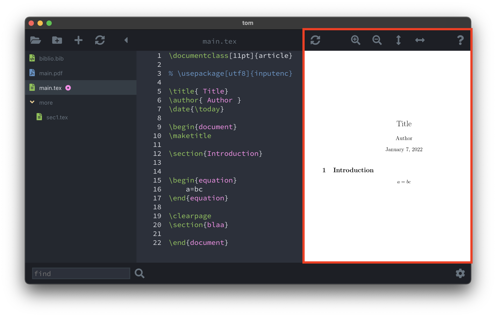
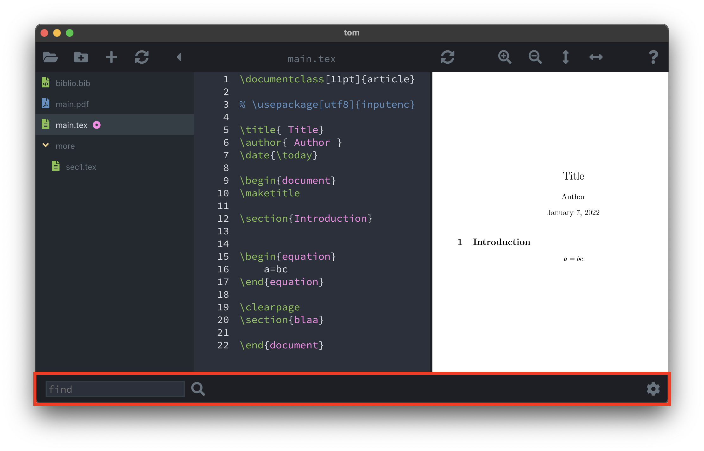
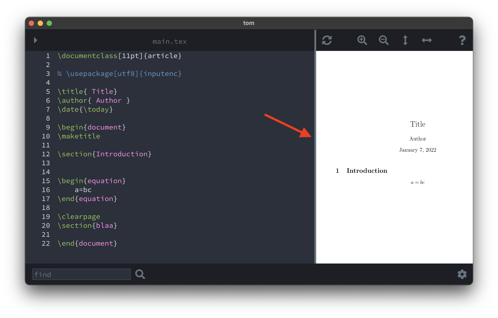

A project is a directory containing at least one .tex file.
If multiple .tex files are present the program will automatically
detect the main file, i.e. the file containing the line
\documentclass. Note that only one file per project is allowed and
expected to contain the \documentclass command.
A tree view of the relevant files inside the current project.
Open folder: opens a folder/projectCreate new folder: creates a new folder in the current projectAdd file: touches new files inside the current projectRefresh: refreshed the browser. Useful if the project folder is manipulated with external commands, like
the Terminal or Finder.Hide browser: hides the browser providing more room to the editor and viewer panels.By right-clicking an item in the browser the user can open a context menu
Preview: images such as pdf or png files are opened in the Preview programRename, Delete: renames or deletes the selected file The main editor to modify .tex or .bib files.
Edit menu.* appears in the top toolbar together with a save buttonWhen the user types, an autocompletion menu may automatically appear at the location of the cursor. The suggestions include
\begin when the user types \b.tex files (contained in the project) when the user types \input{.bib files when the user types \bibliography{\includegraphics[...]{.tex files when the user types \ref{.bib files when the user types \cite{The main PDF document is display here.
Sync: recompiles the latex document and refreshes the PDF document without
losing the focus on the current pageZoom In/OutFit horizontally/verticallyHelp: on click a popup context menu appears with LaTeX documentation and resources.The lower toolbar with a few additional features
Find: type the text you want to find in the opened .tex file and press the Find button.
The editor will automatically scroll to the first istance, which will be selected.
Successive clicks of the Find button will iterate over the additional instances.
Preferences: the settings panel is opened from the Settings button.
By moving the mouse in between the editor and the viewer, a vertical gray bar shows up and by dragging it, it is possible to resize the editor and the viewer.
